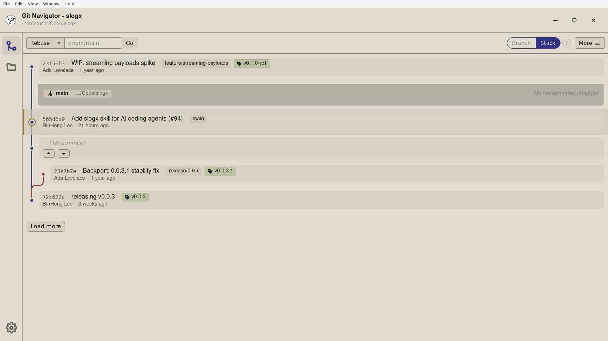

Branches and tags in Git Navigator are inline labels on the graph, not entries hidden in a menu. Create them anywhere, favorite the ones you care about, fast-forward or delete them from a hover menu, and see release tags land on the commits that actually shipped.

Branches and tags are drawn on the commits they point at, so the answer to "where is v1.1 now?" is the graph, not a separate ref view.
Right-click any commit to start a new branch or cut a tag from that point. No need to checkout first or remember the right ref name.
Star the branches you live in. Favorites stay visible in the graph and the refs overlay even when other branches scroll away.
Fast-forward a branch to its upstream, delete merged branches, or force-delete an unmerged one from the hover menu — with confirmations before anything destructive runs.
Yes. Open the commit menu in the graph and choose Create branch. Git Navigator creates the new branch on that commit, whether it is the tip of a branch or deep in history.
Favorited branches stay visible in the graph and at the top of the refs overlay, so the branches you actually work in do not get pushed off-screen when the repository gets busy.
Hover the branch label in the graph or open the refs overlay and choose Delete. Git Navigator confirms before deleting and offers force-delete if the branch is not fully merged.
Yes. Create lightweight or annotated tags from the commit menu. The tag is drawn inline on the commit it points to, and shows up wherever the graph references that commit.